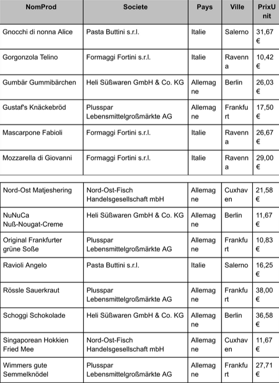
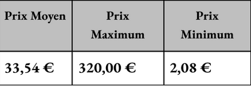
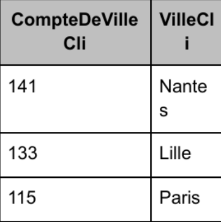

Mission 2
1. Contexte
Le projet consiste à exploiter la base de données KDou à l’aide d’une
interface low-code, facilitant la réalisation de requêtes sans avoir
besoin de coder directement. L’objectif est de manipuler des données et
d’obtenir des indicateurs significatifs pour fournir des analyses et des
informations de gestion exploitables.
2. Présentation des Indicateurs
1) Produit d’Italie ou d’Allemagne à moins de 50€ :
Cet indicateur montre les produits d’origine italienne ou allemande ayant
un prix unitaire inférieur ou égal à 50 €. Cela aide à identifier les
offres de produits dans cette gamme de prix pour des clients
potentiellement intéressés par des produits européens à tarif accessible.

Code SQL généré :
SELECT Produit.NomProd, Fournisseur.Societe, Fournisseur.Pays,
Fournisseur.Ville, Produit.PrixUnit FROM Fournisseur INNER JOIN Produit ON
Fournisseur.NoFour = Produit.NoFour WHERE ((Fournisseur.Pays="Italie" Or
Fournisseur.Pays="Allemagne") AND (Produit.PrixUnit <= 50)) ORDER BY
Produit.NomProd, Fournisseur.Societe, Fournisseur.Pays;
2) Prix moyen, minimum et maximum des produits :
Cet indicateur fournit des statistiques de base sur les prix des produits.
Il donne un aperçu de la gamme de prix et aide à comprendre la diversité
de l’offre en termes de coût.

Code SQL généré :
SELECT Avg(Produit.PrixUnit) AS [Prix Moyen], Max(Produit.PrixUnit) AS
[Prix Maximum], Min(Produit.PrixUnit) AS [Prix Minimum] FROM Produit;
3) Chiffre d’affaires total généré :
Cet indicateur calcule le chiffre d’affaires total en fonction des
commandes passées. Cela fournit une mesure de performance financière
essentielle pour la gestion et la prise de décisions. Résultat : Le
chiffre d’affaire total est de 1 648 176,92 € Code SQL généré : SELECT
Sum([PrixUnitCli]*[QteCom]) AS T FROM DetailCommande;
4) Nombre de clients par ville :
Cet indicateur classe les villes par nombre de clients, permettant de
déterminer les marchés les plus développés. Il est utile pour évaluer la
concentration géographique des clients et cibler des actions marketing
spécifiques.

Code SQL généré :
SELECT Client.VilleCli, Count(Client.VilleCli) AS CompteDeVilleCli FROM
Client GROUP BY Client.VilleCli ORDER BY Count(Client.VilleCli) DESC;